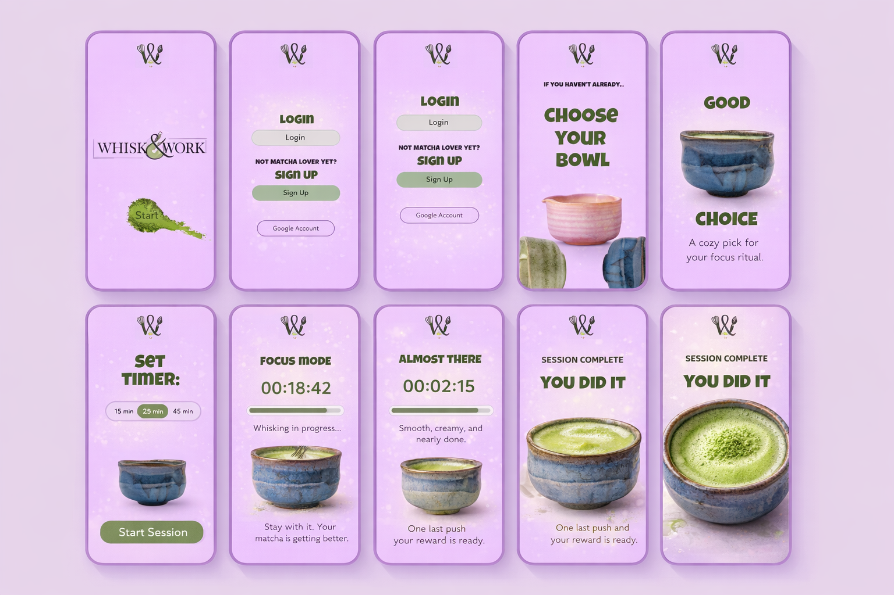
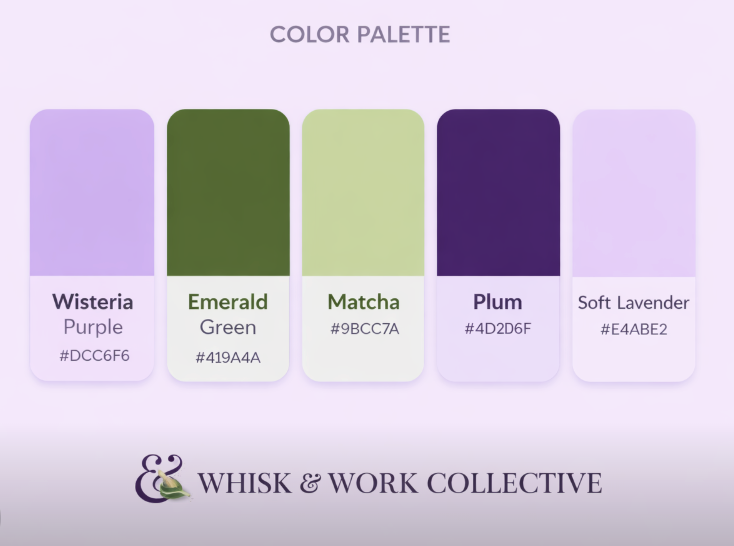
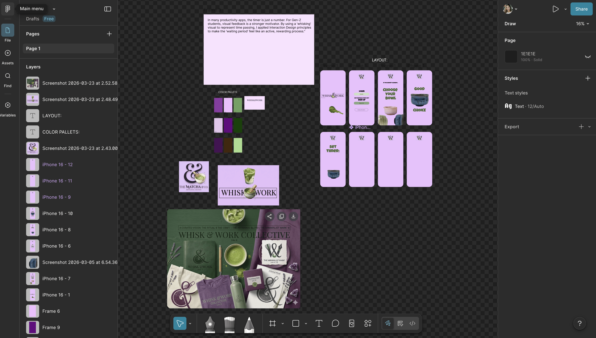

Problem
Most study timers feel rigid and transactional. They track time, but they do not support motivation in a meaningful or emotionally engaging way.
Whisk & Work
Whisk & Work is a productivity concept that reimagines studying as a calming ritual. Instead of a stressful countdown, the experience visually rewards progress through the process of making matcha — encouraging focus through positive reinforcement.

Project Overview
Most study timers feel rigid and transactional. They track time, but they do not support motivation in a meaningful or emotionally engaging way.
I wanted to create a study experience that feels softer, more human, and more encouraging — something that students would actually want to come back to.
Whisk & Work transforms a focus session into a ritual. As the user studies, the matcha visually improves, creating a reward loop tied directly to effort.
Shift productivity away from pressure and toward gentle motivation, making studying feel more satisfying, aesthetic, and emotionally connected.
User Insight
Through reflecting on my own habits and observing how students interact with study tools, I noticed that motivation increases when progress feels visible and tied to something enjoyable.
Matcha already has a calming, ritual-based identity among students. I used that emotional connection as the core of the experience, turning the timer into something more meaningful than a countdown.
“Instead of making studying feel like time is running out, I wanted it to feel like you are creating something as you go.”
Behind the Scenes
My sketches focused on mapping the emotional flow of the experience, the step-by-step interface, and how matcha could become a visual reward system within the product.

Design Process
I started by identifying what was missing from traditional study timers: emotional motivation, delight, and a sense of reward.
I simplified the journey into clear steps: enter the app, choose a bowl, set a timer, focus, and receive a visual reward at the end.
Instead of using stress or urgency, I used visual reinforcement. The longer the user stays focused, the more satisfying the result becomes.
The branding, bowl selection, and soft palette were all designed to support the ritualistic and calming identity of the product.
Key UX Decisions
Design Principles
These principles guided both the product design and the interface styling. I wanted the app to feel like a comforting ritual, not just another timer.
Visual Design
The visual language combines lavender tones, earthy matcha greens, ceramic bowl imagery, and playful typography to create a brand identity that feels both soft and memorable.


User Journey
The first screen introduces the brand in a warm, aesthetic way.
A simple entry screen keeps the experience familiar and approachable.
The user begins the ritual by selecting a bowl, adding personality and ownership.
The timer remains central, but the visual design keeps it from feeling strict or cold.
As time passes, the user sees progress reflected through the whisking and matcha-making process.
The completed matcha becomes the final payoff, reinforcing the value of staying focused.
Why This Works as a Case Study
This project demonstrates more than interface design. It shows product thinking, emotional UX, concept development, visual identity building, user flow planning, and how design decisions can be tied back to human behavior.
It also reflects how branding and UX can work together to support a single product vision from concept to screen design.
Outcome & Reflection
Even simple tools can feel more meaningful when they connect to a feeling, ritual, or visual reward rather than only utility.
A visual cue can be more motivating than a static timer, especially when it turns progress into something the user wants to keep building.
The matcha theme was not decorative. It became part of the interaction model, emotional experience, and overall product value.